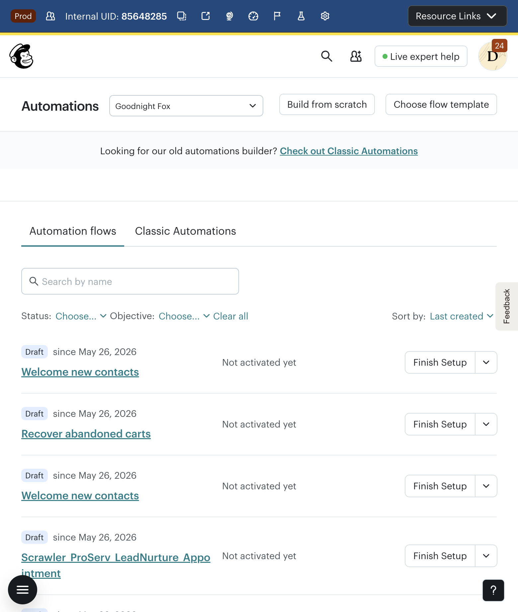
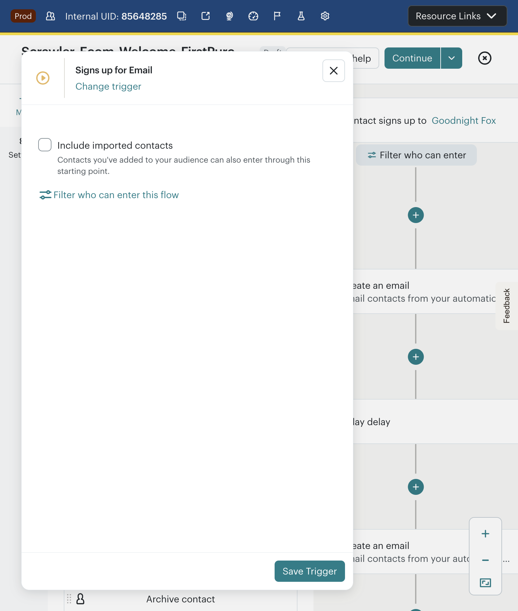
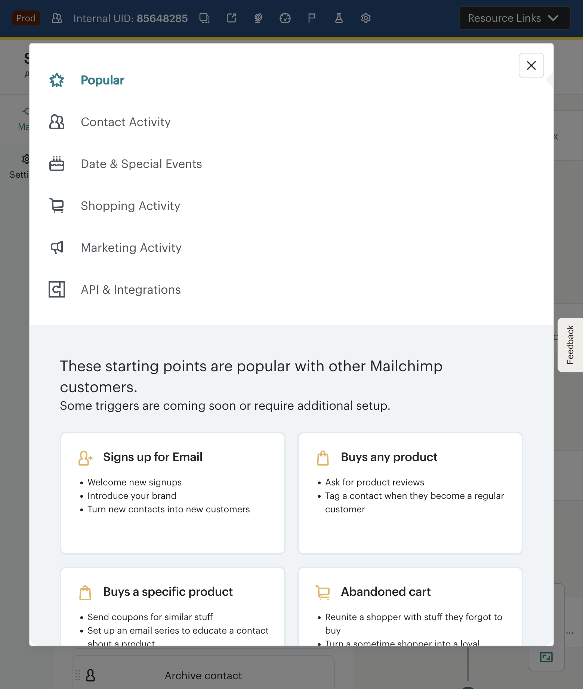
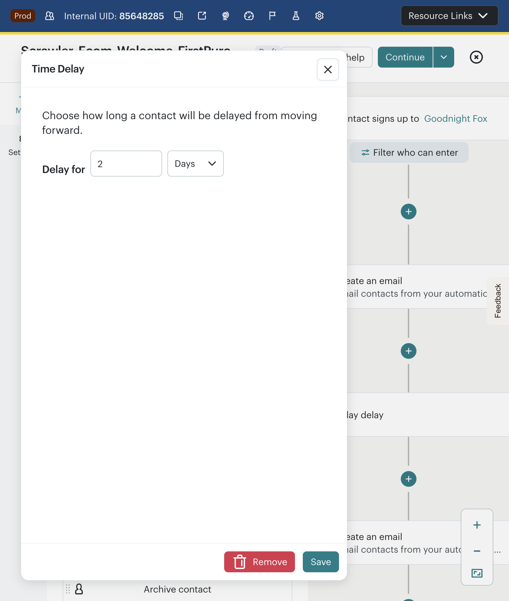
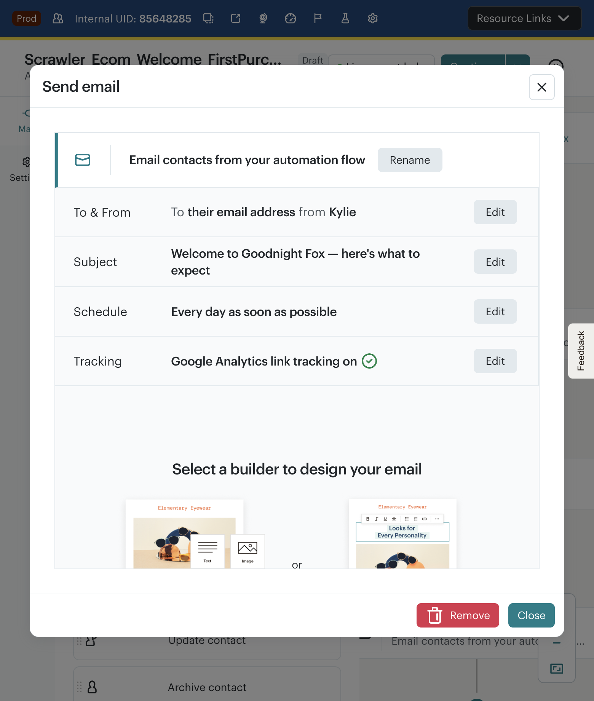
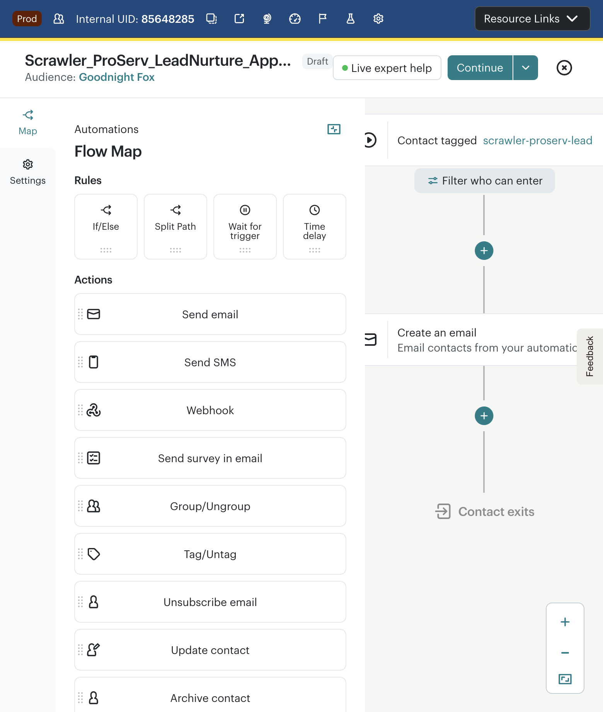
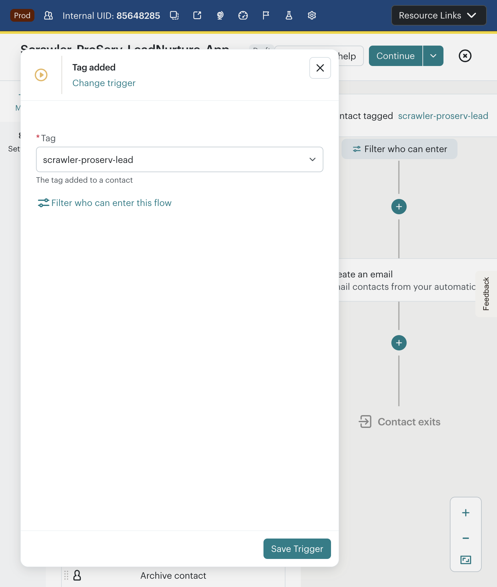

CJB Automation Launch Barriers
Expert Marketer Audit · Mailchimp Customer Journey Builder · Goodnight Fox (us17) · May 26, 2026
Launch Readiness Verdict
As expert marketers attempting to build and launch two common automation flows (welcome series, lead nurture), we encountered 3 launch blockers, 5 usability issues, and 2 structural barriers that prevented confident activation. The flows remain in Draft after a complete attempt.
Methodology
Personas: (A) E-commerce SMB building welcome → first purchase series. (B) Professional services building lead nurture → consultation booking.
Taxonomy: Issues mapped to 8-stage CJB workflow (Discover → Define → Design → Compose → Target → Validate → Activate → Monitor). Classification: Barrier (blocks getting started), Usability (slows progress), Launch-blocker (prevents confident activation).
Automations List — Starting Point

Recommended templates: "Welcome new contacts," "Recover abandoned carts," "Recover lost customers." No ProServ/appointment/nurture templates visible. Expert marketers building B2B or service flows must start from scratch every time.
Flow A: E-Commerce Welcome → First Purchase
Flow: Scrawler_Ecom_Welcome_FirstPurchase · Builder ID: 9171 · Trigger: Signs up for Email

Green "Continue" button is visible but its enabled/disabled state depends on journey completeness. No checklist or tooltip explains what's missing. Expert marketers cannot tell if the flow is ready to review.



Welcome series best practice is 1–3 day spacing. A 7-day default means expert marketers who miss this setting ship a welcome series where the second email arrives a week late. No contextual recommendation based on flow type.

Impact: Automation emails force a builder choice that doesn't exist in regular campaigns (which default to NEB). Expert marketers trained on the new builder face a different editing experience inside CJB. The campaign wizard feels disconnected from the journey canvas. Content stalls here because the editing context switch is jarring.
Launch impact: BLOCKS content completion → incomplete emails → cannot Turn On.
While this modal is open, "Save and close flow" and canvas clicks are blocked. Must explicitly Close this modal before saving. No auto-save.
Flow B: ProServ Lead Nurture → Appointment
Flow: Scrawler_ProServ_LeadNurture_Appointment · Builder ID: 9172 · Trigger: Tag added (scrawler-proserv-lead)

The combination of builder friction (step 06), overlay blocking (canvas clicks intercepted by modals), and lack of progress indicators meant the ProServ flow was abandoned with only the skeleton complete. A marketer who hits these barriers repeatedly will abandon CJB.

Accounts with many tags face a long scroll through the combobox. Creating a new tag works, but finding an existing tag requires scanning the entire list. Combined with click-intercept issues on radio buttons, this slows trigger configuration for power users.
Cross-Cutting Issues Matrix
| # | Issue | Type | Severity | Persona | Stage | Launch Impact | HVC Theme |
|---|---|---|---|---|---|---|---|
| 1 | Template gallery skews e-commerce | Barrier | P2 | ProServ | 1 — Discover | Slows | Better Templates / Pre-built Flows |
| 2 | Trigger picker has no search | Barrier | P1 | Both | 1–2 — Discover/Define | Blocks | Trigger Selection List Not Searchable |
| 3 | Popular triggers tab skews e-commerce | Barrier | P2 | ProServ | 1 — Discover | Slows | — |
| 4 | Delay node defaults to 1 week | Usability | P2 | E-com | 3 — Design | Slows | — |
| 5 | Legacy vs New Builder fork in email steps | Launch-blocker | P2 | Both | 4 — Compose | Blocks | CJB Still Uses Legacy Editor |
| 6 | Add-step overlay intercepts canvas clicks | Usability | P3 | Both | 3 — Design | Slows | Slow/Confusing Journey Builder UX |
| 7 | Continue button state opaque | Usability | P2 | Both | 6 — Validate | Slows | — |
| 8 | Email modal blocks Save and Close | Usability | P3 | Both | 4–6 — Compose/Validate | Slows | — |
| 9 | Tag selector: long list, no inline search | Usability | P2 | ProServ | 2 — Define | Slows | — |
| 10 | Incomplete emails prevent confident Turn On | Launch-blocker | P0* | Both | 4–7 — Compose/Activate | Blocks | Premature Turn On / Activation |
*P0 for launch outcome (qualitative assessment, not incident severity). Issues observed during live scripted walkthrough on Goodnight Fox account.
Recommendations for Product & Engineering
Must Fix (Launch Blockers)
| Issue | Fix | Expected Impact |
|---|---|---|
| Trigger picker not searchable | Add typeahead/search to Starting Points modal | Reduce trigger selection time from 30s+ to <5s for returning users |
| Legacy builder fork in CJB emails | Default to NEB for automation emails; deprecate legacy option | Unblock email content completion; match campaign editing experience |
| No completion checklist for Turn On | Show explicit readiness checklist (each email has content, subject, from; trigger configured; etc.) | Give marketers confidence to activate or clear signal of what's missing |
Should Fix (Usability)
| Issue | Fix | Expected Impact |
|---|---|---|
| Delay defaults to 1 week | Context-aware defaults (welcome series: 1–2 days; cart recovery: 1 hour) | Fewer misconfigured flows shipping wrong timing |
| Template gallery e-commerce bias | Add ProServ/B2B/appointment templates to gallery | Reduce blank-canvas starts for ~50% of non-DTC users |
| Tag selector UX | Add search/filter within tag combobox | Scale tag-based triggers for accounts with 100+ tags |
| Overlay click interception | Fix z-index / event propagation on add-step overlays | Remove dead clicks that confuse users mid-build |